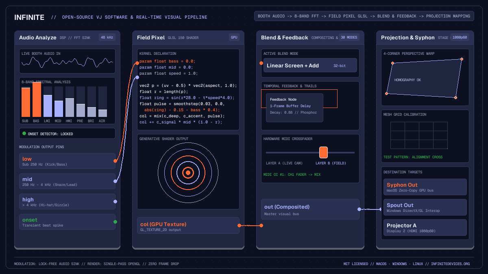

Creative
Open source VJ software: real-time visual performance in Infinite
Build real-time generative visuals, map live audio frequencies, and drive stage projection with Infinite, an open source VJ software workstation for performers.

on this page
- Architecture of a real-time visual workstation
- Ingesting live audio with Audio Analyze
- Procedural shader generation in Field Pixel
- Live video compositing with Blend and Feedback
- Hardware control via MIDI CC and modulators
- Multi-display projection mapping and Syphon routing
- Honest constraints and technical boundaries

Live visual performers, video artists, and VJs often find themselves caught between expensive proprietary suites and fragmented coding environments. Traditional VJ tools frequently rely on restrictive licensing dongles, fixed video playback paradigms, or separate audio analysis applications linked through fragile network protocols. Meanwhile, creative coding frameworks require writing low-level windowing and graphics boilerplate before rendering a single frame.
Infinite approaches live visual performance from a different direction. It is a free, MIT-licensed audiovisual workstation that brings audio synthesis, real-time video compositing, hardware modulation, and GPU fragment shaders together on a single canvas. As an open source VJ software platform running on macOS, Windows, and Linux, Infinite allows performers to build modular visual rigs that react directly to acoustic signals with sub-millisecond precision.
Whether you are performing generative visual sets alongside live electronic music, mixing live camera feeds at club nights, or projection mapping multi-screen stage environments, Infinite provides the building blocks for expressive real-time visuals.
Architecture of a real-time visual workstation
Standard video software treats audio and visuals as disconnected media tracks. An image mixer might read sound from an auxiliary sound card input, process amplitude through an operating system audio queue, and hand numbers over to a rendering loop several frames later. In high-tempo club environments or rhythmically intricate live electronic sets, this round-trip latency creates a noticeable disconnect between percussive attacks and visual impacts.
Infinite solves this through a shared engine architecture:
- Lock-free modulation queues: The audio engine operates on dedicated real-time worker threads at 48 kHz, while the graphics engine runs on the display refresh loop. Analysis values pass between these domains through lock-free ring buffers.
- Synchronous evaluation: When a video node cooks, it samples modulation values updated by the most recent audio block. The modulation pass evaluates immediately before the frame cooks, ensuring that picture updates track incoming sound rather than the previous frame.
- GPU-centric pipeline: Video textures, generative shaders, and compositing blend modes execute entirely within OpenGL framebuffers, avoiding unnecessary memory transfers between graphics memory and system RAM.
This unified design gives performers the immediacy of hardware modular synthesisers combined with the graphical flexibility of modern shader programming.
Ingesting live audio with Audio Analyze
Audio reactivity is central to modern visual performance. In Infinite, incoming acoustic signals enter the graph through either an Audio In node capturing line-level signals from a DJ mixer, an Audio File player, or internal synthesis nodes such as Analog.
To convert sound into visual modulation, route the audio signal into an Audio Analyze node. The node performs continuous fast Fourier transform analysis and envelope tracking across several dedicated outputs:
low: Energy below 250 Hz, isolating kick drums and sub-bass transients.mid: Frequencies between 250 Hz and 4 kHz, tracking vocal presence, snare snaps, and melodic synths.high: Energy above 4 kHz, capturing hi-hats, cymbals, and percussive sizzle.level: Instantaneous root-mean-square amplitude across the full audible spectrum.onset: Transient detection spikes that fire when sudden percussive strikes occur.band0throughband7: An 8-band spectral filterbank providing granular frequency separation.
Connecting a cable from the low pin of Audio Analyze to a visual parameter allows basslines to pump canvas geometry, scale textures, or modulate colour lookup tables with zero perceptible latency.
Procedural shader generation in Field Pixel
Pre-rendered video clips consume substantial storage and can feel repetitive over a three-hour live set. Infinite incorporates generative graphics directly into the node graph through the Field Pixel node.
Field Pixel compiles concise mathematical expressions into GPU fragment shaders. Performers can declare modulatable parameters using the param keyword, which instantly exposes corresponding input pins on the node body:
param float bass = 0.0 [0.0, 1.0];
param float mid = 0.0 [0.0, 1.0];
param float speed = 1.0 [0.1, 4.0];
param float feedback_amount = 0.85 [0.0, 1.0];
# Centre coordinates and correct aspect ratio
vec2 p = (uv - 0.5) * vec2(aspect, 1.0);
float dist = length(p);
float angle = atan(p.y, p.x);
# Generate dynamic geometric rings modulated by audio
float wave = sin(dist * 24.0 - t * speed * 3.0 + angle * 4.0);
float pulse = smoothstep(0.04, 0.0, abs(wave) - 0.15 - bass * 0.35);
# Construct a luminous duotone colour gradient
vec3 c_deep = vec3(0.05, 0.06, 0.12);
vec3 c_accent = vec3(1.0, 0.42, 0.21);
vec3 c_signal = vec3(0.65, 0.69, 1.0);
col = mix(c_deep, c_accent, pulse);
col += c_signal * mid * smoothstep(0.4, 0.0, dist);Because declared parameters become interactive pins on the canvas, you can patch low into bass and an LFO into speed. The shader recompiles in milliseconds whenever code changes, making live shader coding practical during rehearsals and shows.
Live video compositing with Blend and Feedback
Live VJing requires layering multiple visual streams: live camera feeds, generative shader patterns, 3D geometry renders, and typographic overlays. Infinite provides a suite of 2D compositing nodes designed for live video manipulation:
Multi-layer compositing with Blend
The Blend node takes two input textures (inA and inB) and combines them using approximately 30 compositing modes, including Normal, Multiply, Screen, Add, Overlay, Difference, and Exclusion.
Unlike conventional software that computes blending in non-linear gamma space, Infinite provides a linear toggle for physically accurate light accumulation, as well as headroom preservation so bright highlights do not clip prematurely. The mix slider controls crossfading between sources and can be modulated by hardware MIDI sliders or audio envelope followers.
Temporal recursion with Feedback and Trails
Spatial echoes and recursive feedback loops are classic staples of live visual performance. Infinite includes two purpose-built nodes for temporal processing:
Feedback: Captures its upstream image once per frame and introduces a single-frame delay. This safe delay allows cables to patch downstream results back into upstream nodes without causing infinite recursion errors during graph cooking.Trails: Accumulates previous frames with adjustable decay and threshold controls, generating silky motion blur, liquid light trails, and phosphor persistence effects behind fast-moving visuals.
When combined with an upstream Transform node, a Feedback loop can continuously rotate, scale, or displace images, producing infinite zoom tunnels and kaleidoscopic generative textures.
Hardware control via MIDI CC and modulators
Performing without a physical interface can feel sterile. Infinite connects directly to external MIDI controllers, foot pedals, and fader boxes through dedicated input nodes:
MIDI CC: Listens for continuous controller messages from physical knobs, rotary encoders, and faders. Each incoming CC channel maps directly to any parameter in the graph.MIDI Trigger: Translates incoming pad strikes and note-on events into instantaneous triggers, useful for strobing visuals or advancing clip banks.LFO: Generates periodic modulation waveforms (Sine, Triangle, Saw, Square, Sample and Hold) with tempo synchronisation locked to musical divisions.Audio to CV: Converts raw audio waveforms into smoothed control voltages with adjustable attack and release ballistic curves.
By mapping a MIDI controller fader to the mix parameter of a Blend node, while assigning rotary encoders to shader parameters, performers gain hands-on physical mastery over their generative visual environment.
Multi-display projection mapping and Syphon routing
Delivering visuals to audiences involves stage surfaces, projectors, and external LED walls. Infinite provides robust output routing options for professional venue configurations:
Projection mapping with the Projection node
The Projection node provides hardware-accelerated keystone correction, corner pinning, and mesh grid warping within a single render pass. Performers can choose between two primary warping modes:
- CornerPin: Provides 4-corner perspective homography, allowing operators to align rectangular visuals onto angled projection surfaces, fabric screens, or stage flats.
- MeshGrid: Subdivides the projection surface into an adjustable grid of control points, making it straightforward to map onto curved surfaces, architectural columns, or domes.
To speed up on-site projector alignment, the Projection node includes built-in test patterns, such as alignment crosshairs, coordinate grids, and calibration colour bars.
Inter-application video routing with Syphon and Spout
In complex multi-software setups, VJs often need to send visual streams between Infinite, Resolume Arena, OBS Studio, MadMapper, or TouchDesigner. Infinite supports zero-copy GPU texture sharing:
- On macOS, the
Syphon Outnode broadcasts textures with zero CPU overhead, whileSyphon Inreceives external camera streams or media playback feeds. - On Windows, the same nodes transparently utilise Spout2 for high-speed DirectX/OpenGL inter-process texture sharing.
For artists exploring stage setups and automatic show rigs, our guide to automatic visuals for DJ sets provides additional recipes for booth audio integration. Visual artists can also explore dedicated workflows on the VJs page.
Honest constraints and technical boundaries
Infinite is an evolving open-source project. Operating transparently about current capabilities helps artists plan their live production rigs reliably:
- Headless mode limitations: While Infinite includes a comprehensive command-line interface for offline video rendering and patch validation, hardware devices (such as live webcams, capture cards, and microphone inputs) are refused in headless execution. Live VJ performances must be conducted within the interactive GUI application.
- Linux texture sharing: While macOS provides Syphon and Windows provides Spout, Linux does not currently support inter-process GPU texture sharing in Infinite. Linux performers should use the
Video Innode with Video4Linux2 capture cards, local media files, or network streaming rather than Syphon/Spout nodes. - Plugin formats: Infinite hosts native AU and VST3 instruments and effects on macOS and Windows, but proprietary Avid AAX format plugins are not supported.
By maintaining clean separation between audio and graphics processing, eliminating licence restrictions, and providing direct access to low-level shader math, Infinite delivers a capable open-source VJ software environment for artists who value modular creative freedom.